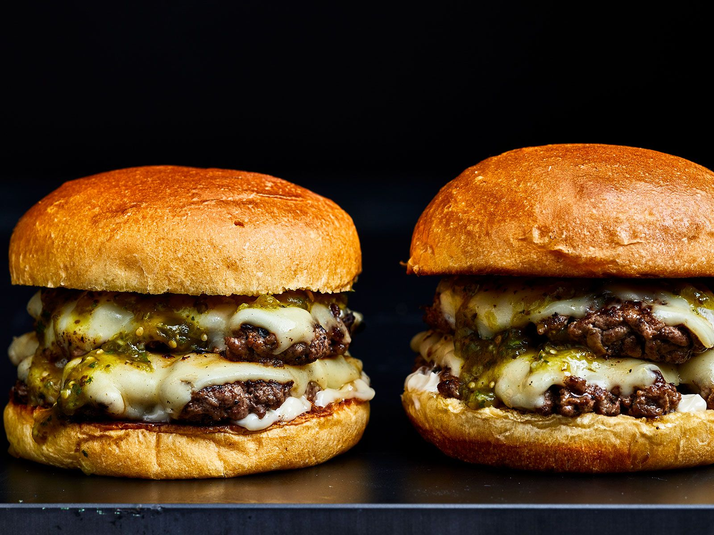

Burgers

Description
The classic burger is an all time BBQ favourite! This super easy homemade beef burger recipe gives you delicious patties, packed with onions and herbs for extra flavour, that are perfect for topping with cheese, lettuce and tomato, and sandwiching between floury buns.
Ingredients
- olive oil
- 1 onion
- 500g mince
- 1tsp mixed herbs
- 1 egg
- 4 slices mature cheddar
- 4 white rolls
- lettuce leaves
- 1 sliced tomato
- ketchup or burger sauce
Method
- Heat the olive oil in a frying pan, add the onion and cook for 5 minutes until softened and starting to turn golden. Set aside.
- In a bowl, combine the beef mince with the herbs and the egg. Season, add the onions and mix well. Using your hands, shape into 4 patties.
- Cook the burgers on a preheated barbecue or griddle for 5-6 minutes on each side. While the second side is cooking, lay a slice of cheese on top to melt slightly (if using).
- Meanwhile, lightly toast the cut-sides of the buns on the barbecue. Fill with the lettuce, burgers and tomato slices. Serve with ketchup, if you like.